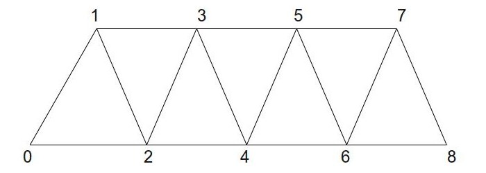
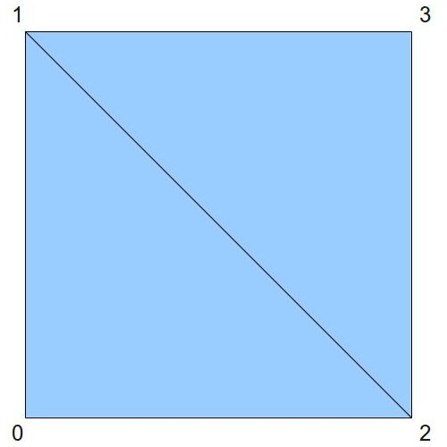
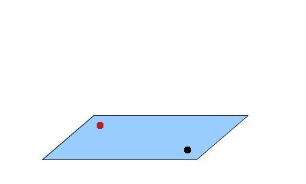
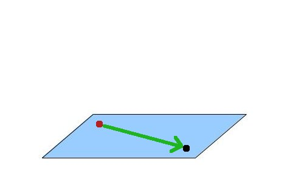
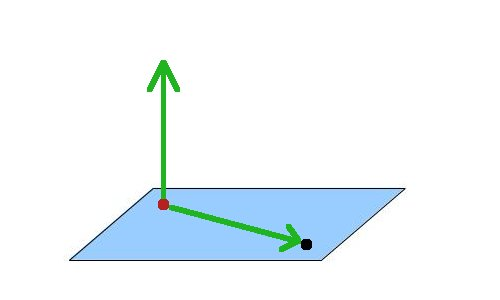
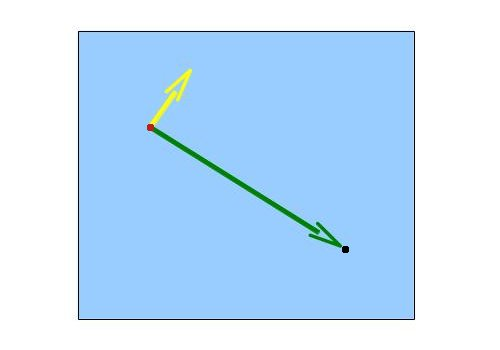

Background
We've been utilizing the vertex and the fragment shaders from early on in this series of tutorials but in fact we left out an important shader stage called the Geometry Shader (GS). This type of shader was introduced by Microsoft in DirectX10 and was later incorporated into the core OpenGL in version 3.2. While the VS is executed per vertex and the FS is executed per pixel the GS is executed per primitive. This means that if we are drawing triangles each invocation of the GS receives exactly one triangle; if we are drawing lines each invocation of the GS receives exactly one line, etc. This provides the GS a unique view of the model where the connectivity between the vertices is exposed to the developer, allowing her to develop new techniques that are based on that knowledge.
While the vertex shader always takes one vertex as input and outputs one vertex (i.e. it cannot create or destroy vertices on the fly) the GS has the unique capability of making changes to the primitives that are passing through it. These changes include:
- Changing the topology of the incoming primitives. The GS can receive primitives in any topology type but can only output point lists, line strips and triangle strips (the strip topologies are described below).
- The GS takes one primitive as input and can either drop it altogether or output one or more primitives (this means that it can produce both less and more vertices than what it got). This capability is known as growing geometry. We will take advantage of this capability in this tutorial.
Geometry shaders are optional. If you compile a program without a GS the primitives will simply flow directly from the vertex shader down to the fragment shader. That's why we've been able to get to this point without mentioning them.
Triangle lists are constructed using trios of vertices. Vertices 0-2 are the first triangle, vertices 3-5 are the second and so forth. To calculate the number of triangles generated from any number of vertices simply divide the number of vertices by 3 (dropping the remainder). Triangle strips are more efficient because instead of adding 3 vertices to get a new triangle most of the time we just need to add one vertex. To construct a triangle strip start out with 3 vertices for the first triangle. When you add a fourth vertex you get the second triangle which is constructed from vertices 1-3. When you add a fifth vertex you get the third triangle which is constructed from vertices 2-4, etc. So from the second triangle and on every new vertex is joined with the previous two to create a new triangle. Here's an example:
As you can see, 7 triangles were created from just 9 vertices. If this was a triangle list we would have only 3 triangles.
Triangle strips have an important property with regard to the winding order inside the triangles - the order is reversed on the odd triangles. This means that the order is as follows: [0,1,2], [1,3,2], [2,3,4], [3,5,4], etc. The following picture shows that ordering:

Now that we understand the concept of geometry shaders let's see how they can help us implement a very useful and popular technique called billboarding. A billboard is a quad which always faces the camera. As the camera moves around the scene the billboard turns with it so that the vector from the billboard to the camera is always perpedicular to the billboard face. This is the same idea as billboards in the real world that are placed along the highways in a way that will make them as visible as possible to the cars that are passing by. Once we got the quad to face the camera it is very easy to texture map it with the image of a monster, tree or whatever and create a large number of scene objects that always face the camera. Billboards are often used to create a forest where a large number of trees is required in order to create the effect. Since the texture on the billboard is always facing the camera the player is fooled into thinking that the object has real depth where in fact it is completely flat. Each billboard requires only 4 vertices and therefore it it much cheaper in comparison to a full blown model.
In this tutorial we create a vertex buffer and populate it with world space locations for the billboards. Each location is just a single point (3D vector). We will feed the locations into the GS and grow each location into a quad. This means that the input topology of the GS will be point list while the output topology will be triangle strip. Taking advantage of triangle strips we will create a quad using 4 vertices:
The GS will take care of turning the quad to face the camera and will attach the proper texture coordinates to each outgoing vertex. The fragment shader will only need to sample the texture and provide the final color.
Let's see how we can make the billboard always face the camera. In the following picture the black dot represents the camera and the red dot represents the location of the billboard. Both dots are in world space and while it looks like they are located on a surface which is parallel to the XZ plane they don't have to be. Any two points will do.
We now create a vector from the billboard location to the camera:
Next we add the vector (0,1,0):
Now do a cross product between these two vectors. The result is a vector which is perpedicular to the surface created by the two vectors. This vector points in the exact direction along which we need to extend the point and create a quad. The quad will be perpedicular to the vector from the original point to the camera, which is what we want. Looking at the same scene from above we get the following (the yellow vector is the result of the cross product):
One of the things that often confuses developers is in what order to do the cross product (A cross B or B cross A?). The two options produce two vectors that are opposite to one another. Knowing in advance the resulting vector is critical because we need to output the vertices such that the two triangles that make up the quad will be in clockwise order when looking at them from the point of view of the camera. The left hand rule comes to our rescue here. This rule says that if you are standing at the location of the billboard and your forefinger is pointing towards the camera and your middle finger is pointing upwards (towards the sky) then your thumb will point along the result of "forefinger" cross "middle finger" (the remaining two fingers are often kept clamped here). In this tutorial we call the result of the cross product the "right" vector because it points toward the right when looking at your hand like that from the camera point of view. Doing a "middle finger" cross "forefinger" will simply generate the "left" vector.
(We are using the left hand rule because we are working in a left hand coordinate system (Z grows as we move further into the scene). The right hand coordinate system is exactly the reverse).Source walkthru
(billboard_list.h:27)
class BillboardList
{
public:
BillboardList();
~BillboardList();
bool Init(const std::string& TexFilename);
void Render(const Matrix4f& VP, const Vector3f& CameraPos);
private:
void CreatePositionBuffer();
GLuint m_VB;
Texture* m_pTexture;
BillboardTechnique m_technique;
};
The BillboardList class encapsultes everything you need in order to generate billboards. The Init() function of the class takes the filename that contains the image which will be texture mapped on the billboard. The Render() function is called from the main render loop and takes care of setting up the state and rendering the billboard. This function needs two parameters: the combined view and projection matrix and the location of the camera in world space. Since the billboard location is specified in world space we go directly to view and projection and skip the world transformation part. The class has three private attributes: a vertex buffer to store the location of the billboards, a pointer to the texture to map on the billboard and the billboard technique that contains the relevant shaders.
(billboard_list.cpp:80)
void BillboardList::Render(const Matrix4f& VP, const Vector3f& CameraPos)
{
m_technique.Enable();
m_technique.SetVP(VP);
m_technique.SetCameraPosition(CameraPos);
m_pTexture->Bind(COLOR_TEXTURE_UNIT);
glEnableVertexAttribArray(0);
glBindBuffer(GL_ARRAY_BUFFER, m_VB);
glVertexAttribPointer(0, 3, GL_FLOAT, GL_FALSE, sizeof(Vector3f), 0); // position
glDrawArrays(GL_POINTS, 0, NUM_ROWS * NUM_COLUMNS);
glDisableVertexAttribArray(0);
}
This function enables the billboard technique, sets the required state into OpenGL and draws the points that are turned into quads in the GS. In this demo the billboards are laid out in strict rows and columns which explains why we multiply them to get the number of points in the buffer. Note that we are using point list as our input topology. The GS will need to match that.
(billboard_technique.h:24)
class BillboardTechnique : public Technique
{
public:
BillboardTechnique();
virtual bool Init();
void SetVP(const Matrix4f& VP);
void SetCameraPosition(const Vector3f& Pos);
void SetColorTextureUnit(unsigned int TextureUnit);
private:
GLuint m_VPLocation;
GLuint m_cameraPosLocation;
GLuint m_colorMapLocation;
};
This is the interface of the billboard technique. It requires only three parameters in order to do its job: the combined view/projection matrix, the position of the camera in world space and the number of the texture unit where the billboard texture is bound.
(billboard.vs)
#version 330
layout (location = 0) in vec3 Position;
void main()
{
gl_Position = vec4(Position, 1.0);
}
This is the VS of the billboard technique and with most of the action taking place in the GS you cannot ask for a simpler VS. The vertex buffer contains only position vectors and since they are already specified in world space we only need to pass them through to the GS. That's it.
(billboard.gs:1)
#version 330
layout (points) in;
layout (triangle_strip) out;
layout (max_vertices = 4) out;
The core of the billboard technique is located in the GS. Let's take a look at it piece by piece. We start by declaring some global stuff using the 'layout' keyword. We tell the pipeline that the incoming topology is point list and the outgoing topology is triangle strip. We also tell it that we will emit no more than four vertices. This keyword is used to give the graphics driver a hint about the maximum number of vertices that can be emitted by the GS. Knowning the limit in advance gives the driver an opportunity to optimize the behavior of the GS for the particular case. Since we know that we are going to emit a quad for each incoming vertex we declare the maximum as four vertices.
(billboard.gs:7)
uniform mat4 gVP;
uniform vec3 gCameraPos;
out vec2 TexCoord;
The GS gets the position in world space so it only needs a view/projection matrix. It also needs the camera location in order to calculate how to orient the billboard towards it. The GS generates texture coordinates for the FS so we must declare them.
(billboard.gs:12)
void main()
{
vec3 Pos = gl_in[0].gl_Position.xyz;
The line above is unique to the GS. Since it is executed on a complete primitive we actually have access to each of the vertices that comprise it. This is done using the built-in variable 'gl_in'. This variable is an array of structures that contains, among other things, the position that was written into gl_Position in the VS. To access it we go to the slot we are interested in using the index of the vertex. In this specific example the input topology is point list so there is only a single vertex. We access it using 'gl_in[0]'. If the input topology was a triangle we could also have written 'gl_in[1]' and 'gl_in[2]'. We only need the first three components of the position vector and we extract them to a local variable using '.xyz'.
vec3 toCamera = normalize(gCameraPos - Pos);
vec3 up = vec3(0.0, 1.0, 0.0);
vec3 right = cross(toCamera, up);
Here we make the billboard face the camera per the explanation at the end of the background section. We do a cross product between the vector from the point to the camera and a vector that points straight up. This provides the vector that points right when looking at the point from the camera point of view. We will now use it to 'grow' a quad around the point.
Pos -= (right * 0.5);
gl_Position = gVP * vec4(Pos, 1.0);
TexCoord = vec2(0.0, 0.0);
EmitVertex();
Pos.y += 1.0;
gl_Position = gVP * vec4(Pos, 1.0);
TexCoord = vec2(0.0, 1.0);
EmitVertex();
Pos.y -= 1.0;
Pos += right;
gl_Position = gVP * vec4(Pos, 1.0);
TexCoord = vec2(1.0, 0.0);
EmitVertex();
Pos.y += 1.0;
gl_Position = gVP * vec4(Pos, 1.0);
TexCoord = vec2(1.0, 1.0);
EmitVertex();
EndPrimitive();
}
The point in the vertex buffer is considered to be at the center of the bottom of the quad. We need to generate two front facing triangles from it. We start by going left to the bottom left corner of the quad. This is done by substracting half of the 'right' vector from the point. Next we calculate the position in clip space by mutiplying the point by the view/projection matrix. We also set the texture coordinate to (0,0) because we plan to cover the entire texture space using the quad. To send the newly generated vertex down the pipe we call the built-in function EmitVertex(). After this functionn is called the variables that we have written to are considered undefined and we have to set new data for them. In a similar way we generate the top left and bottom right corners of the quad. This is the first front facing triangle. Since the output topology of the GS is triangle strip we only need one more vertex for the second triangle. It will be structured using the new vertex and the last two vertices (which are the quad diagonal). The fourth and final vertex is the top right corner of the quad. To end the triangle strip we call the built-in function EndPrimitive().
(billboard.fs)
#version 330
uniform sampler2D gColorMap;
in vec2 TexCoord;
out vec4 FragColor;
void main()
{
FragColor = texture2D(gColorMap, TexCoord);
if (FragColor.r == 0 && FragColor.g == 0 && FragColor.b == 0) {
discard;
}
}
The FS is very simple - most of its work is to sample the texture using the texture coordinates generated by the GS. There is a new feature here - the built-in keyword 'discard' is used in order to drop a pixel completely on certain cases. The picture of the hell-knight from Doom which is included in this tutorial shows the monster on a black background. Using this texture as-is will make the billboard look like a full sized card which is much larger than the monster itself. To overcome this we test the texel color and if it is black we drop the pixel. This allows us to select only the pixels that actually make up the monster. Try to disable 'discard' and see the difference.